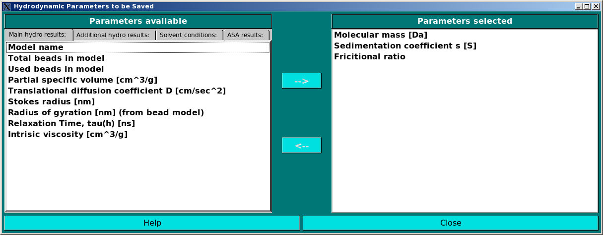

| |
Manual |

In this module you can select a series of parameters that can be saved in a comma-separated file
(extension .csv) at the end of the hydrodynamic computations. The module consists of four,
tab-selectable screens where the parameters are subdivided according to their origin and characteristics.
The parameters can be toggled from one window of the panel to the other (left side, list of parameters
available; right side, parameters to be saved) by clicking on them (multiple selection available) and
then using the arrows present between the two windows.
The four screens are Main hydro results:, Additional hydro results:,
Solvent conditions:, and ASA results:. Note that the order by which you select the
parameters (i.e. the order by which they appear in the right-side window) will be their order in the
saved file.
The Main hydro results: screen contains all parameters which are listed in the
Show Hydrodynamic Calculations pop-up window, i.e.:
Model name
Total beads in model
Used beads in model
Molecular mass [Da]
Partial specific volume [cm^3/g]
Sedimentation coefficient s [S]
Translational diffusion coefficient D [cm^2/sec]
Stokes radius [nm]
Frictional ratio
Radius of gyration [nm] (from bead model)
Relaxation time tau(h) [ns]
Intrinsic viscosity [cm^3/g]
The Additional hydro results: screen contains all the other parameters which are reported
in the *.hydro_res file:
Total surface area of beads in the model [nm^2]
Total volume of beads in the model [nm^3]
Number of unused beads (this differs from the *.hydro_res file because the used beads are already listed in the Main
hydro results panel)
Used bead surface area [nm^2]
Used bead mass [Da]
Conversion Factor
Translational frictional coefficient [g/s]
Rotational frictional coefficient [g*cm^2/sec]
Rotational diffusion coefficient [1/sec]
Rotational frictional coefficient [X,Y,Z] [g*cm^2/sec] (this selects the three separate rot. frictional coeff. values
along the X, Y, and Z axes)
Rotational diffusion coefficient [X,Y,Z] [1/sec] (this selects the three separate rot. diff. coeff. values
along the X, Y, and Z axes)
Rotational Stokes' radius [X,Y,Z] [1/sec] (this selects the three separate rot. Stokes' radius values
along the X, Y, and Z axes)
Centre of resistance [X, Y, Z] [nm] (X, Y, Z coordinates saved)
Centre of mass [X, Y, Z] [nm] (X, Y, Z coordinates saved)
Centre of diffusion [X, Y, Z] [nm] (X, Y, Z coordinates saved)
Centre of viscosity [X, Y, Z] [nm] (X, Y, Z coordinates saved)
Uncorrected intrinsic viscosity [cm^3/g]
Uncorrected Einstein's radius [nm]
Corrected intrinsic viscosity [cm^3/g]
Corrected Einstein's radius [nm]
Relaxation times, tau(1) [ns]
Relaxation times, tau(2) [ns]
Relaxation times, tau(3) [ns]
Relaxation times, tau(4) [ns]
Relaxation times, tau(5) [ns]
Relaxation times, tau(m) [ns]
Relaxation times, tau(h) [ns]
Maximun extensions [X, Y, Z] [nm] (X, Y, Z coordinates saved)
Axial ratios [ X:Z, X:Y, Y:Z ]
The Solvent conditions: screen contains the parameters as set in the
Hydrodynamic Calculations options module:
Solvent name
Solvent acronym
Solvent Temperature [°C]
Solvent viscosity [cP]
Solvent density [g/ml]
The ASA results: screen presently contains only two parameters, derived from the ASAB1 execution:
Radius of gyration (+r) [A] (from PDB atomic structure) (computed by taking into account the actual radius r
of each atom)
Radius of gyration (-r) [A] (from PDB atomic structure) (computed without taking into account the actual radius r
of each atom)
This document is part of the UltraScan Software Documentation
distribution.
Copyright © notice.
The latest version of this document can always be found at:
http://www.ultrascan.uthscsa.edu
Last modified on February 1, 2010.
{kind=link}